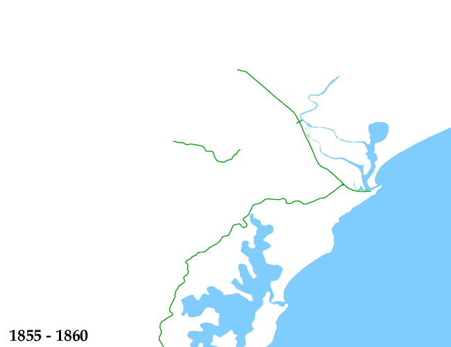

Maitland/Newcastle Network Development Animation
The following image is an animated GIF file showing the history of the
Maitland/Newcastle railway network. It is characterised by early growth from 1860 to
around 1930, a period of maturity, followed by the closure of a
number of branches in the 1980's.

-
Key to lines status:
in use,
out of use,
tourist,
lifted.
- Bold lines opened or closed last 5 years.
-
To view individual images in this sequence, click
here
- To re-view the animation, hit "Reload" or "Refresh" in your browser.